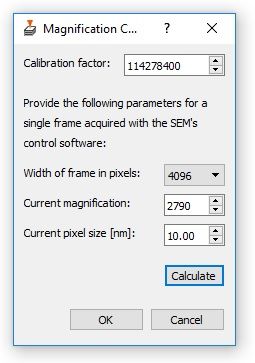
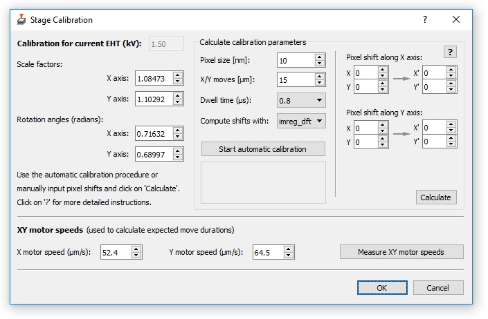
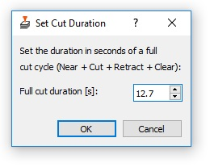

Installation
Windows 10+ Installer
For most users, we recommend downloading the Windows 10 or higher installer
(Releases). This
installer automatically installs Python and all required packages in
local subdirectories, registers the application (so that you can use the
Windows tool 'Add or remove programs' to uninstall it), and creates
shortcuts in the Start Menu and on the Desktop. You can run the
application by simply clicking on its symbol on the Desktop or the Start
Menu, or by running SBEMimage.bat in the installation folder.
On Windows 10, it is recommended not to use high-resolution scaling. Currently, when using a scaling other than 100% on Windows 10, there may be problems with the font size in the GUI (but no impact on functionality).
The installer can be downloaded and then used to install SBEMimage on computers that have no access to the internet.
If you are using DigitalMicrograph (DM) to control a 3View microtome, the installation must be on the same computer on which DM is running.
Installation for developers
If you are familiar with Python and wish to run SBEMimage with your default system Python or a custom Python environment, follow the instructions below.
1) Install Python on the computer on which you wish to
run SBEMimage. If you are using DigitalMicrograph (DM) to
control a 3View microtome, the installation must be on the same
computer on which DM is running. We recommend the Anaconda Python
distribution: https://www.anaconda.com/products/individual.
2) Either clone the repository in C:\Utilities\SBEMimage or download
all files from the GitHub repository
(https://github.com/SBEMimage/SBEMimage) and copy them into the
folder C:\Utilities\SBEMimage (including the folder structure with
subdirectories src, img, gui…). You can choose a folder other
than C:\Utilities, but please ensure the program has full
read/write access. The path to SBEMimage.py should be:
\SBEMimage\src\SBEMimage.py. Important: In the DM communication
script dm\SBEMimage_DMcom_GMS2.s (or the GMS3 version), you have
to update the variable install_path if you use a directory other
than C:\Utilities\SBEMimage or C:\pytools\SBEMimage.
3) Make sure you can access the commands 'python' and 'pip' from your
command line, either on a system level (you may have to include the
appropriate folders in your %PATH% environment variable) or in a
Python environment, which you need to activate first.
4) Use the command line to switch to the SBEMimage directory, in
which the file requirements.txt is located and type:
pip install -r requirements.txt. This will install all required
Python packages to run SBEMimage.
Python environment for offline computers
If you need to install SBEMimage on a computer that is not connected to the internet, the easiest solution is to download the installer, copy it to the offline machine, and install SBEMimage with the installer.
If you wish to use your own Python environment on the offline machine, follow the instructions below.
1) Install the latest version of Anaconda or Miniconda (Python 3.6+) on
the offline machine.
2) On a computer with internet access, create a conda environment that
matches the conda environment on the acquisition computer: the
architecture, operating system, and the Python version. Install pip
using conda: conda install pip.
3) Use the pip download option (pip download <package_name>) to
download all required Python Wheel files rather than installing
them, and copy them into a directory that you can then transfer to
the offline computer.
4) On the offline computer, activate your Python environment (or use
the system environment) and install all Wheel files with the command
pip install <wheel_name>.
5) Copy all SBEMimage directories and files (previously downloaded on
another computer) to the folder C:\Utilities\SBEMimage on the
offline computer. After that, you should be ready to run
SBEMimage.
Alternatively, you can try to use conda-pack to copy an entire environment from one computer to another: https://conda.github.io/conda-pack
First start of the software
If you use DigitalMicrograph (DM) to control a 3View microtome, you
first have to load and run a script in DM that allows SBEMimage to
communicate with DM. Load the script SBEMimage_DMcom_GMS2.s (for GMS
2) or SBEMimage_DMcom_GMS3.s (for GMS 3) in DM. It can be found in
\SBEMimage\dm. After opening the correct script in DM, click on
Execute. The message : 'Ready. Waiting for command from SBEMimage...'
should be displayed in DM's output window. Further information is
provided in the script file.
Now run the main application by executing the batch file SBEMimage.bat
or by typing python SBEMimage.py in the console window (current
directory must be \SBEMimage\src). Select default.ini in the startup
dialog. This default configuration will start SBEMimage in simulation
mode. The simulation mode should always work because the APIs for the
SEM and the microtome are disabled. This mode can be used to get
familiar with the SBEMimage GUI (Main Controls and Viewport), set up
acquisitions, calculate estimates, or look at existing data. If you can
run SBEMimage in simulation mode, it means that your Python
environment works and that the installation was successful.
To switch to the normal application mode, do the following: When you
have launched SBEMimage with default.ini, save the current
configuration under a new name (Top menu: 'Configuration' -> 'Save as
new configuration file') . This will be your first custom user
configuration. You will also be asked to provide a name for your system
configuration (for example, 'Gemini3View_FMI_Basel'). This name will
refer to the system settings of your setup (devices, hardware settings,
calibrations). All of the future user/project configuration files will
link to that system configuration. Now, when you have saved your first
custom user configuration file (the new file name should be displayed in
the status bar of the Main Controls window, and next to it the system
configuration file name), click on Configuration in the top menu and
then on Leave simulation mode. Confirm and restart SBEMimage with
your new configuration file.
If the communication script is running in DigitalMicrograph and the SmartSEM remote API is active and set up correctly, the software should now be fully operational. If the APIs cannot be initialized, you will receive an error message when starting up the application.
System and user configuration
SBEMimage comes with a default system configuration (system.cfg) and
a default user configuration (default.ini). Both can be found in the
subdirectory cfg. These files cannot be changed (from within
SBEMimage) because they are used as templates. They should only be
updated by developers when new functionality is added. When you save a
new user configuration for the first time, you will be asked to provide
a name for a new custom system configuration file. This system
configuration file will be linked to all user configurations on your
setup.
Your system configuration file contains settings that are setup-specific and usually don't change often. Your user configuration files contain session and workspace-related parameters that change while your are using the software and while an acquisition is running. You can create as many user configuration files as you wish, for example for different users or one configuration file for each acquisition project. Simply open an existing user configuration .ini file (other than default.ini) and save it under a new name.
It's recommended to create a backup of the folder \SBEMimage\cfg,
especially of your system configuration file.
Calibration
When you have created your first custom user and system configuration files (see above), you must perform several calibration routines to make SBEMimage ready for routine use on your setup.
Magnification
In the top menu in Main Controls, click on 'Calibration' -> 'Magnification calibration'. Take an image on your SEM with a frame width of either 2048 or 4096 pixels. Use a pixel size that matches your target resolution for tiles, for example 10.00 nm (recommended default choice). In the dialog (see below), select the frame width and pixel size used for that image, and the exact magnification factor you had to select to get that pixel size. Then click on 'Calculate' to calculate the new calibration factor. Confirm the new value by clicking on 'OK'.

Stage calibration
In the top menu in Main Controls, click on 'Calibration' -> 'Stage Calibration' to launch the stage calibration dialog (see below). Start the automatic stage calibration procedure with the default settings by clicking on 'Start automatic calibration'. Click on the button with the question mark for more information.
Note that the stage must be calibrated separately for each EHT (high voltage) that you would like to use for your projects. If no calibration is found for the current EHT, a warning message will be displayed. In that case, SBEMimage will use whatever calibration is available for the EHT closest to the current EHT.
For the automatic calibration routine, you can select different Python packages ('cv2', 'imreg_dft', 'skimage') to perform the pixel shift calculations. If the selected package fails to calculate reasonable parameters for the current sample, try another package. If the automatic routine does not work, you can manually input the pixel shifts. Use a program such as ImageJ to look at the three images that were acquired. You'll find the images in your current base directory (start.tif, shift_x.tif, shift_y.tif). Find an image feature in start.tif and input its precise pixel coordinates (X/Y), then find this feature in the image acquired after the X shift (shift_x.tif) and input the new pixel coordinates. Do the same for the shift in Y direction and click on 'Calculate' to find the new calibration parameters.

Motor speeds
In the top menu in Main Controls, click on 'Calibration' -> 'Stage Calibration' (same dialog window as for the stage calibration above). Start the automatic motor speed measurement to update the motor speeds.
Cut cycle duration
In the top menu in Main Controls, click on 'Calibration' -> 'Microtome cut duration'. Set the cut duration of a full cycle in seconds. If you are using DigitalMicrograph, you can read the cut duration in the DM output log after running a cut cycle with SBEMimage.
